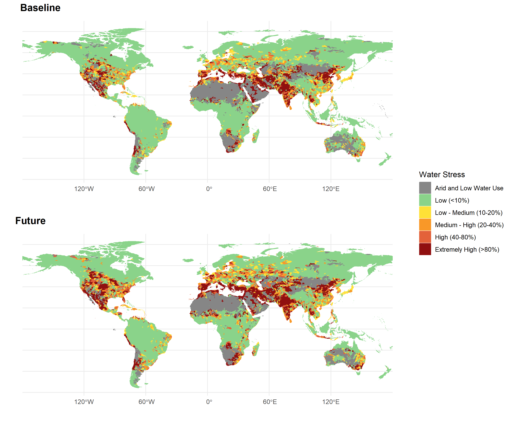

[[1]]
Table: Mines that produce Lithium, per primary commodity
|PRIMARY_COMMODITY | n| perc|
|:-----------------|--:|----:|
|Lithium | 45| 77.6|
|Gold | 9| 15.5|
|Nickel | 1| 1.7|
|Potash | 1| 1.7|
|Tantalum | 1| 1.7|
|Tin | 1| 1.7|
[[2]]
Table: Mines that produce Cobalt, per primary commodity
|PRIMARY_COMMODITY | n| perc|
|:-----------------|--:|----:|
|Nickel | 87| 43.3|
|Copper | 60| 29.9|
|Gold | 14| 7.0|
|Cobalt | 12| 6.0|
|Ferronickel | 8| 4.0|
|Zinc | 8| 4.0|
|Platinum | 7| 3.5|
|Iron Ore | 4| 2.0|
|Silver | 1| 0.5|
[[3]]
Table: Mines that produce Nickel, per primary commodity
|PRIMARY_COMMODITY | n| perc|
|:-----------------|---:|----:|
|Nickel | 240| 68.6|
|Platinum | 35| 10.0|
|Copper | 24| 6.9|
|Gold | 21| 6.0|
|Ferronickel | 20| 5.7|
|Palladium | 3| 0.9|
|Cobalt | 2| 0.6|
|Bauxite | 1| 0.3|
|Ilmenite | 1| 0.3|
|Iron Ore | 1| 0.3|
|Titanium | 1| 0.3|
|Zinc | 1| 0.3|
[[4]]
Table: Mines that produce Graphite, per primary commodity
|PRIMARY_COMMODITY | n| perc|
|:-----------------|--:|----:|
|Graphite | 19| 90.5|
|Nickel | 1| 4.8|
|Zinc | 1| 4.8|
[[5]]
Table: Mines that produce Copper, per primary commodity
|PRIMARY_COMMODITY | n| perc|
|:-----------------|---:|----:|
|Copper | 700| 62.3|
|Gold | 141| 12.5|
|Zinc | 90| 8.0|
|Nickel | 52| 4.6|
|Silver | 37| 3.3|
|Platinum | 33| 2.9|
|Lead | 25| 2.2|
|Iron Ore | 11| 1.0|
|Cobalt | 8| 0.7|
|Tin | 8| 0.7|
|Molybdenum | 3| 0.3|
|Palladium | 3| 0.3|
|Tungsten | 3| 0.3|
|U3O8 | 3| 0.3|
|Ferronickel | 2| 0.2|
|Lithium | 2| 0.2|
|Graphite | 1| 0.1|
|Manganese | 1| 0.1|
|Titanium | 1| 0.1|
[[6]]
Table: Mines that produce Manganese, per primary commodity
|PRIMARY_COMMODITY | n| perc|
|:-----------------|--:|----:|
|Manganese | 41| 53.9|
|Iron Ore | 17| 22.4|
|Ferromanganese | 5| 6.6|
|Nickel | 3| 3.9|
|Copper | 2| 2.6|
|Lead | 2| 2.6|
|Zinc | 2| 2.6|
|Ferronickel | 1| 1.3|
|Gold | 1| 1.3|
|Lithium | 1| 1.3|
|Silver | 1| 1.3|Comprehensive Analysis of Climate & Water Stress Hazards on Mining Operations
1. Methodology
1.1 Data Sources
The data used in this analysis was obtained from the following sources:
1.1.1 Water Stress
Aqueduct 4.0 presents 13 water risk indicators including quantity, quality, and reputational concerns. A global hydrological model (PCR-GLOBWB 2) was used to generate datasets on sub-basin water supply and use.
The model is used to project future sub-basin water conditions using CMIP6 climate forcings. The baseline scenario represents a 40-year period (1979-2019). The projections centered around three periods (2030, 2050, and 2080) under three future scenarios (business-as-usual SSP 3 RCP 7.0, optimistic SSP 1 RCP 2.6, and pessimistic SSP 5 RCP 8.5).
For our purposes, we chose the water stress indicator. The data provides information on water stress levels across the globe, categorized into six levels of water stress.
Source: https://www.wri.org/research/aqueduct-40-updated-decision-relevant-global-water-risk-indicators
1.1.2 Climate Hazards
The climate hazards data was obtained from the ISIMIP data warehouse. This specific climmate hazard dataset contains the land area fractions and population fractions exposed (‘le’ for land exposed and ‘pe’ for population exposed) to the following six extreme climate impact events: crop failures , drought, heatwaves, river floods, tropical cyclones and wildfire.
The data are provided on a global 0.5° grid and in annual time steps. It was derived from multi-model climate impacts simulations generated within the second round (ISIMIP2b, https://www.isimip.org/protocol/2b, Frieler et al., 2017) of the Intersectoral Impact Model Intercomparison Project (ISIMIP, https://www.isimip.org). The simulations cover the pre-industrial and historical periods, as well as future projections until 2100 for the low emission Representative Concentration Pathway RCP2.6 and the high emission one RCP6.0.
Data source: Stefan Lange, Jan Volkholz, Tobias Geiger, Fang Zhao, Iliusi Vega del Valle, Ted Veldkamp, Christopher Reyer, Lila Warszawski, Veronika Huber, Jonas Jägermeyr, Jacob Schewe, David N. Bresch, Matthias Büchner, Jinfeng Chang, Philippe Ciais, Marie Dury, Kerry Emanuel, Christian Folberth, Dieter Gerten, Simon N. Gosling, Manolis Grillakis, Naota Hanasaki, Alexandra‐Jane Henrot, Thomas Hickler, Yasushi Honda, Akihiko Ito, Nikolay Khabarov, Aristeidis Koutroulis, Wenfeng Liu, Christoph Müller, Kazuya Nishina, Sebastian Ostberg, Hannes Müller Schmied, Sonia I. Seneviratne, Tobias Stacke, Jörg Steinkamp, Wim Thiery, Yoshihide Wada, Sven Willner, Hong Yang, Minoru Yoshikawa, Chao Yue, Katja Frieler (2020): Land area fractions and population fractions exposed to extreme climate impact events derived from ISIMIP2b output data (v1.0). ISIMIP Repository. https://doi.org/10.48364/ISIMIP.924045
1.1.3 Mining Data
The mining data was obtained from the S&P mining database. The data provides information on various mining operations, including their location, primary commodity, development status, and activity status.
1.2 Analysis
1.2.1 Zonal Statistics
The water stress and climate hazards data were extracted for each mining operation based on their geographical coordinates.
1.2.2 Hazard Exposure Levels
The hazard exposure levels were categorized into six levels of severity for both water stress and climate hazards. The levels are as follows:
Water Stress:
- Arid and Low Water Use
- Low (<10%)
- Low - Medium (10-20%)
- Medium - High (20-40%)
- High (40-80%)
- Extremely High (>80%)
The water stress levels are based on the WRI Aqueduct Water Risk Atlas, which estimates water stress as a ratio of demand to availability. The thresholds used here are the same used by the WRI Aqueduct Water Risk Atlas.
Climate Hazards:
- Low (<10%)
- Low - Medium (10-20%)
- Medium - High (20-40%)
- High (40-80%)
- Extremely High (>80%)
The unit of climate hazard exposure is the percentage of the area affected by the hazard. The thresholds used here are based on the thresholds used above for water stress.
1.2.3 Scenarios
The analysis considers three scenarios for water stress:
Baseline: This scenario represents the historical climate data, which is used as a baseline for comparison. It represents a 40-year period (1979-2019).
Business-as-usual: This scenario represents the future projections under the business-as-usual scenario (SSP 3 RCP 7.0). It is based on the assumption that current trends in water use and climate change will continue without significant changes in policy or behavior. The projections chosen are centered around 2080.
Pessimistic: This scenario represents the future projections under the pessimistic SSP 5 RCP 8.5 scenario. The projections chosen are centered around 2080.
The analysis considers three scenarios for climate hazards:
Baseline: This scenario represents the historical climate data, which is used as a baseline for comparison.
Business-as-usual: Projections until 2100 for the low emission Representative Concentration Pathway RCP2.6.
Pessimistic: Projections until 2100 for the high emission Representative Concentration Pathway RCP6.0.
1.2.4 Compound Exposure
The compound exposure analysis took into account that some mines are exposed to more than one hazard at the same time.
For this analysis, we only considered mines that are currently in production or development, and only for climate hazards.
First, the exposure levels for each hazard were categorized between ‘existing’ and ‘non-existing’. All mines with land area exposure above zero were considered as ‘existing’ for that hazard, while those with no exposure were considered as ‘non-existing’.
Then, the exposure levels for each hazard were summed for each mine, resulting in a new exposure level that represents the compound exposure to multiple hazards. Consequently, the ‘compound exposure index’ ranges from 1 to 4, meaning the numver of hazards that a mine is exposed to at the same time.
🌍 2. Input data overview
Mining data
Location of mines
Lithium
Cobalt
Nickel
Graphite
Copper
Manganese
Mining operations
Water stress data

Climate hazards data


Water stress Analysis
`summarise()` has grouped output by 'hazard', 'time', 'new_class'. You can
override using the `.groups` argument.
`summarise()` has grouped output by 'hazard', 'time', 'new_class'. You can
override using the `.groups` argument.
`summarise()` has grouped output by 'hazard', 'time', 'new_class'. You can
override using the `.groups` argument.
`summarise()` has grouped output by 'hazard', 'time', 'new_class'. You can
override using the `.groups` argument.
`summarise()` has grouped output by 'hazard', 'time', 'new_class'. You can
override using the `.groups` argument.
`summarise()` has grouped output by 'hazard', 'time', 'new_class'. You can
override using the `.groups` argument.Water Stress Hazards


Description: These stacked bar charts show the proportion of mines in each exposure category for water stress hazards. Compare panels to see shifts from current to future, and between mines currently in production and those in development. The mines presented here are only mines with critical minerals as primary commodities.
Climate Exposure Analysis
For this, a threshold of 0.01 was used.

Sensitivity analysis
The graph below shows the sensitivity of the results to different thresholds for the percentage of land area exposed to climate hazards. The thresholds used are 0.01, 0.1, 0.2, and 0.5.
The graph refers to the pessimistic scenario (RCP 6.0) and only considers mines that are currently in production.

The graph below shows the difference in the results when considering the primary commodity of the mine versus the commodities list. The commodities list includes all commodities that the mine produces, while the primary commodity is the main commodity that the mine produces.
The graphs below refer to the pessimistic scenario (RCP 6.0) and only considers mines that are currently in production.

Flood exposure analysis

Ownership analysis test
[[1]]
[[2]]
[[3]]